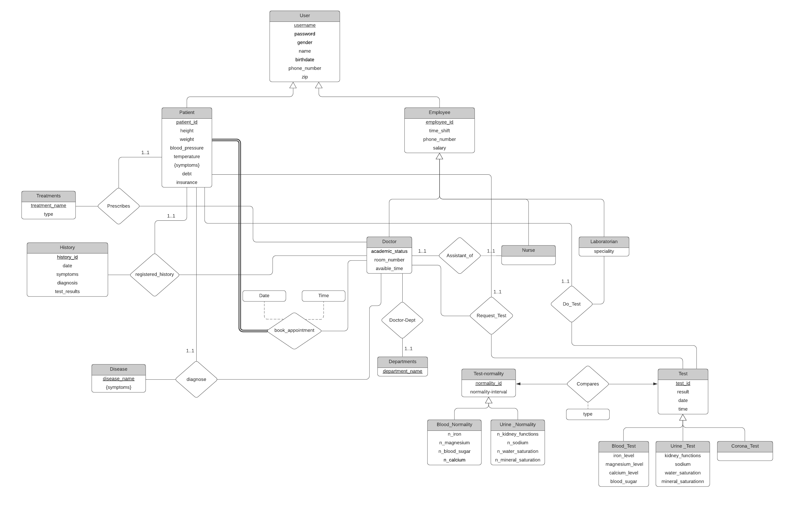

Cs353 Term Project
Proposal Report
Group - 26
Hospital Management System
Group Members
- Osman Buğra Aydın - 21704100
- Ertuğrul Aktaş - 21802801
- Muhammed Doğancan Yılmazoğlu - 21801804
- Yahya Mahmoud Ahmed Elnouby Mohamed - 21801332
Introduction
Project Description
Requirements
3.1. Functional Requirements
3.2. Non-Functional Requirements
3.3. Constraints
Limitations
Entity-Relationship Model
Introduction
This proposal is made for the course CS353 Database Managements Systems to demonstrate a hospital system database with its full components such as doctors, patients, clinics, etc.
The following heading, “Project Description” emphasizes the contents of the project and the motive behind using a database system for an environment such as a hospital.
The title “Requirements” discusses the system’s fundamental requirements regarding interactions between entities and subtle requirements such as the system’s capabilities. Lastly, the section talks about the constraints on the project pre-determined by the course that must be fulfilled.
The following section, which is “Limitations”, talks about the possible limits that could come up in the later stages of the project concerning the actual implementation and architectural design.
Lastly, the part “Entity-Relationship Model” shows a brief description of the system’s entities’ relationships using the ER Model. However, this model is a starting point for the project that could remain unchanged or modified later.
Project Description
Our project aims to design a hospital management system through a website by using a database system. The system will contain the fundamental components of a simple hospital such as doctors, nurses, patients, laboratorians, departments that will deal with tests, diagnoses, prescriptions and treatments.
Everyone involved in the hospital including the doctors and patients can use the system by registering to the hospital website where they can set up their account as a patient or an employee of the hospital. After that point, patients could set an appointment with their choice of doctors at a choice of their time if the doctor’s available. When the appointment is completed, the doctor could require a test from the patient for a more accurate diagnosis where the laboratory performs the test for the patient. When the test results come out, the doctor can use the database to compare the patient’s results with the normality values in the system. Lastly, the doctor could end up prescribing the patient depending on the diagnosis.
The users on the system will have the opportunity to change their information using the website and the system manager will have the permission to check and modify every single piece of information on the system.
Requirements
3.1 Functional Requirements
- A patient can book an appointment with a particular doctor on a particular date and time
- A doctor can request a test for the patient
- A doctor can diagnose a patient
- A doctor can write a patient history
- A doctor can view the patient’s history
- A doctor can prescribe a treatment for the patient
- A doctor can view the test results of the patient
- A doctor can view patient appointments.
- A labrotorian can perform a test to a patient
- A nurse can update a patient's height, temperature, weight and blood pressure.
- A user could specify his/her username, password, birthday, phone number and zip.
- A user can update the information specified above.
3.2 Non-Functional Requirements
- The system must be able to withhold up to 1000 users.
- The system must be able to be used by at least 100 users at the same time.
- A query request must not take no longer than 1 second.
- The system must be open to additional departments and installments such as pharmacy, canteen, in-patient department.
- The data kept on the server must be encrypted to secure patient information.
- Other than the admin no personnel should be able to view user data.
- The appointment table for patients must refresh every 0.5 seconds to prevent overlapping with concurrent users.
- The system will contain no more than 4 buttons and input field to make it simple for the user.
3.3 Constraints
- MySQL for the database management system
- PHP for the backend
- HTML, CSS, BootStrap, JavaScript for the frontend
Limitations
- A doctor can’t take more than one patient at the same time
- A patient can’t book an appointment when the doctor is booked.
- A nurse can assist exactly one doctor
- A doctor can have exactly one nurse
- Only a doctor can request a test for the patient
- Only a labrotorian can update test results
- Only the doctor can update the patient's history and diagnosis.
- Only the doctor can prescribe a treatment to the patient.
- A patient can only view his information.
Entity Relationship Model
